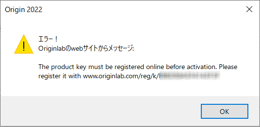

FAQ-1115 ライセンスをアクティブ化するときに"The product key must be registered online before activation" というエラーが表示された場合はどうすればよいですか？
Reg-ProductKey-Before-Activation
最終更新日：2021/12/19
Originライセンスの管理者から直接プロダクトキーを取得し、それをOriginのライセンスのアクティベーションダイアログに入力すると、次のエラーメッセージが表示される場合があります。
- The product key must be registered online before activation.
- 
- Webブラウザで
www.originlab.com/reg/k/<YourProductKey>にアクセスします。
- OriginLabのWebアカウントにログインします。アカウントがない場合は、作成します。
- ログイン後、プロダクトキーの後にあるRegister ボタンをクリックします。
- プロダクトキーがアカウントに登録されます。Origiｎでこれを使用してアクティベートします。
キーワード:登録キー, ノードロック, グループパッケージ, ライセンスアクティベーション